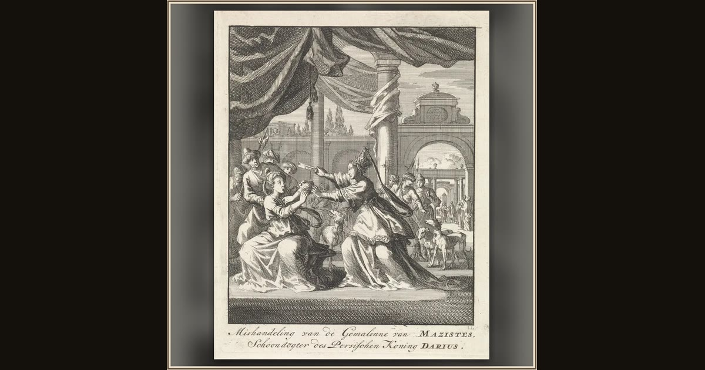

Mishandeling van de vrouw van Masistes
Jan Luyken · 1699 · rijksmuseum
Jan Luyken's etching shows Xerxes' wife falling on her sister-in-law, the wife of Masistes, with a knife while guards look on. Herodotus tells how Amestris had the woman cruelly mutilated (9.112). Explore its place in Herodotus's Histories, Book IX, chapter 29